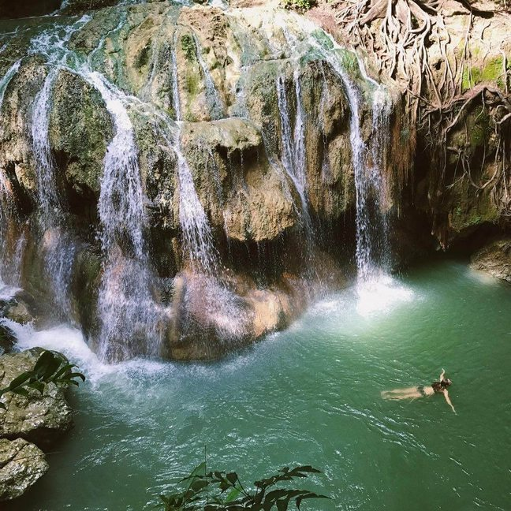
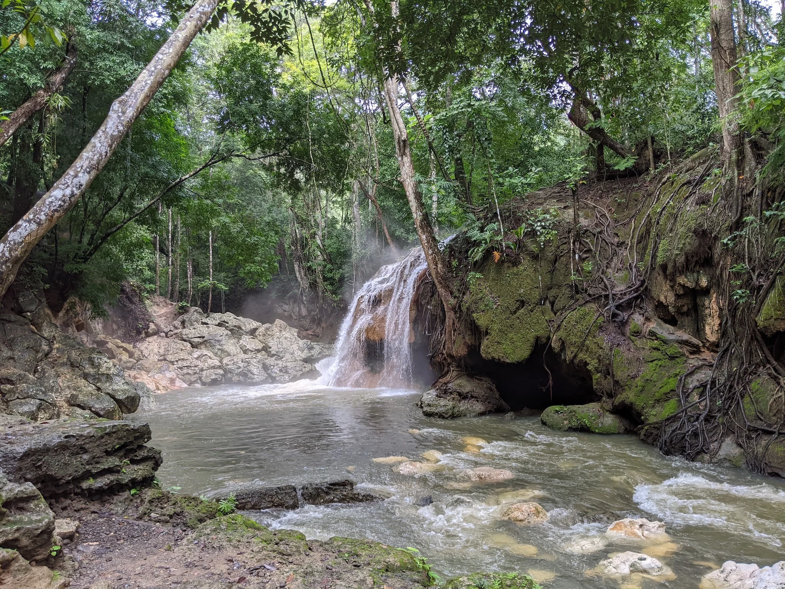
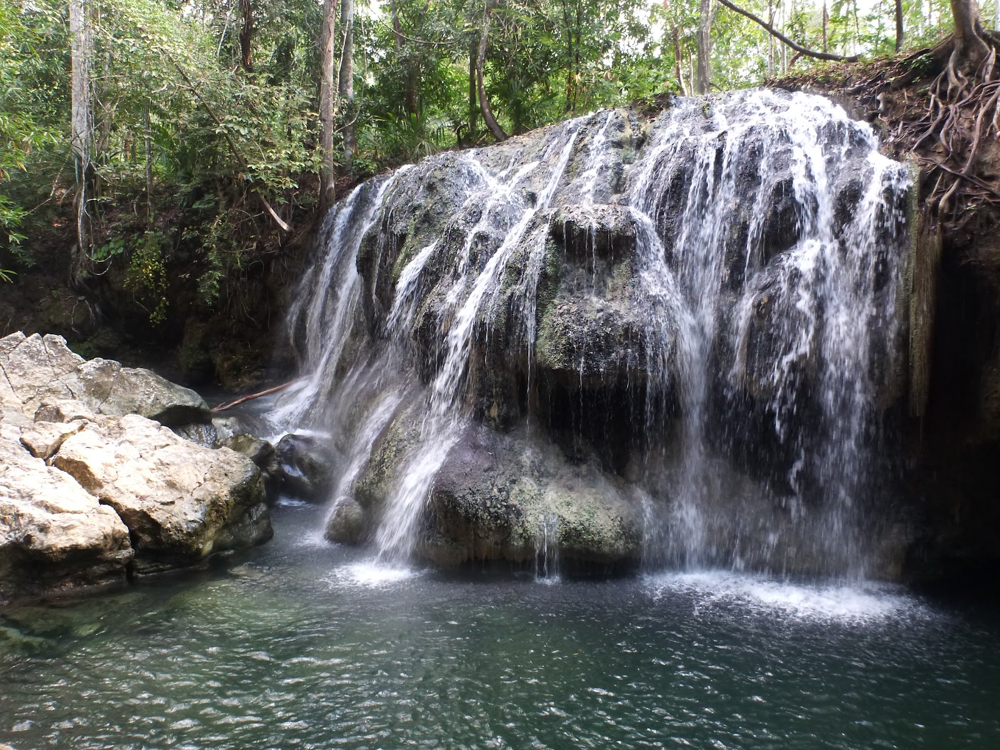

Las aguas termales de Izabal son reconocidas por sus propiedades relajantes y naturales. Son visitadas por turistas que buscan descanso y bienestar en un ambiente tranquilo.
Las aguas termales de Izabal brotan naturalmente de la tierra a temperatura cálida, creando piscinas naturales rodeadas de selva. Sumergirse en ellas es una experiencia relajante y única, donde el calor del agua contrasta con la frescura del ambiente selvático que las rodea. Un lugar perfecto para desconectarse del mundo.
Baño terapéutico en aguas termales, relajación, meditación, senderismo por los alrededores, observación de flora tropical.


